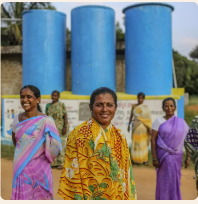
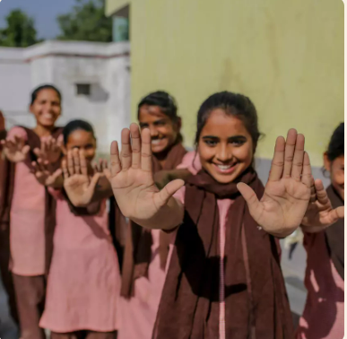
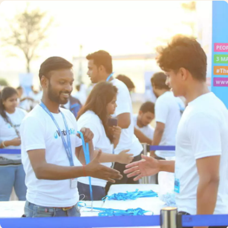
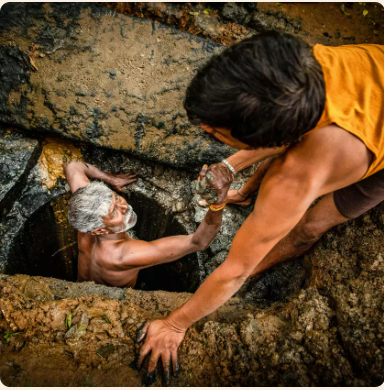

Water Aid India
At a Glance
Our Mission & Vision
Vision: A world where everyone, everywhere has clean water, decent toilets, and good hygiene.
Mission:
- Providing Services: Working with local partners to deliver clean water, decent toilets, and good hygiene facilities and education to communities.
- Advocacy and Influencing: Working with governments and policymakers to ensure water and sanitation are prioritized, funded, and managed sustainably as a basic human right.
- Building Capacity: Supporting local organizations and authorities to develop the skills and systems needed to maintain these essential services for the long term.
Key Focus Areas
- Geographic Focus and Universal Access: Aims to achieve universal, safe, and sustainable WASH access in focused geographic areas to influence wider progress.
- WASH in Health Sector: Prioritize and influence the integration of WASH across the health sector to improve public health, ensuring healthcare facilities have reliable WASH practices.
- Climate Resilience: Works to strengthen the resilience of WASH systems to climate change by implementing solutions and advocating for policies that protect services from floods and droughts.
- Financing for WASH: Focuses on increasing the quantity and quality of financing for WASH projects through advocacy for government investment and private sector funding.
Our Story & Approach

Our Founding
WaterAid was officially established in the UK in 1981 by members of the UK water industry in response to the UN's call for action on the world water crisis. Its first projects began in Zambia and Sri Lanka. It expanded from focusing solely on water to an integrated approach that includes sanitation and hygiene (WASH) in the 1990s.

Our 3-Step Approach
- 1. Build: Install sustainable, inclusive infrastructure (wells, toilets) using local resources and technology.
- 2. Teach: Train local people (community members, mechanics, government staff) on maintenance and hygiene practices.
- 3. Scale: Advocate and campaign to convince governments and donors to invest more money and change policies, multiplying their impact.
Our Journey
- 1981: Founded by the UK water industry.
- 1995: Expanded focus to an integrated WASH approach.
- 2000s: Successfully advocated for sanitation to be included in global development goals.
- Today: A global federation working in 30+ countries, focusing on systemic, lasting change.
Our Operational Models
- Build (Service Delivery): Directly implement WASH projects with local partners in focused geographic areas.
- Teach (Capacity & Empowerment): Work to strengthen the skills and knowledge of everyone involved in the WASH system.
- Scale (Policy & Advocacy): Use evidence from demonstration areas to influence policy and financial decisions at district, national, and global levels.
"Join hands with WaterAid to ensure that no community is deprived of the most fundamental human necessity: clean water. Your support can transform the health, dignity, and future of an entire village."
See The Live Combined Impact AnalysisGlimpse of Their Work




Get Involved
You can get involved in several ways:
- DONATE: Fund life-saving water and hygiene projects.
- CAMPAIGN: Use your voice to secure lasting political change.
- FUNDRAISE: Start an event to empower a community's future.